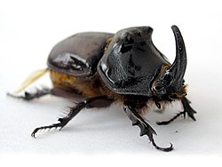
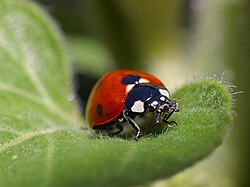
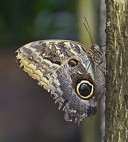
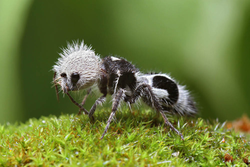
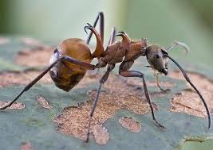

Definición: Los coleópteros son insectos pertenecientes al orden Coleoptera, el más grande de todo el reino animal.
Nombre: “Coleóptero” viene del griego koleos (estuche) y pteron (ala), porque sus alas delanteras forman un estuche protector.
Diversidad: Existen más de 350,000 especies descritas en el mundo, aunque se estima que podrían superar el millón.

El escarabajo rinoceronte es un coleóptero perteneciente a la subfamilia Dynastinae dentro de la familia Scarabaeidae. Su nombre se debe a los grandes cuernos que poseen los machos en la cabeza y el tórax, los cuales recuerdan a los del rinoceronte y se utilizan en combates por conseguir pareja. Este insecto se caracteriza por su gran tamaño y su extraordinaria fuerza, capaz de levantar hasta 850 veces su propio peso. Su cuerpo está protegido por un grueso exoesqueleto y cuenta con élitros que cubren sus alas. Los escarabajos rinoceronte habitan principalmente en bosques tropicales húmedos y maduros, donde se alimentan de materia vegetal en descomposición. Se encuentran distribuidos en casi todo el mundo, excepto en las zonas polares. Aunque su aspecto puede parecer intimidante, el escarabajo rinoceronte no representa un peligro para los humanos.

Las mariquitas, vaquitas de San Antonio, chinitas, o catarinas (Coccinellidae) son una familia de insectos coleópteros de la superfamilia Cucujoidea. Tienen el cuerpo redondeado y con frecuencia coloraciones brillantes, la coloración presenta alta variabilidad intraespecífica, controlada por cambios en un solo gen. Muchas especies se alimentan de pulgones, por lo que contribuyen a controlar estas plagas.La mayoría de las especies de coccinélidos son depredadores carnívoros que se alimentan de insectos como áfidos y cochinillas. Otras especies consumen materia no animal, como plantas y hongos. Se reproducen en primavera y verano en regiones templadas y durante la estación húmeda en regiones tropicales. Muchas especies depredadoras ponen sus huevos cerca de colonias de presas, proporcionando a sus larvas una fuente de alimento. Como la mayoría de los insectos, desarrollan de larva a pupa y a adulto. Las especies templadas hibernan y diapausan durante el invierno; las tropicales están inactivas durante la estación seca. Los coccinélidos migran entre los lugares de latencia y de reproducción.
Definición: Los dípteros son insectos del orden Diptera
Nombre: Proviene del griego di (dos) y pteron (alas), porque poseen solo un par de alas funcionales.
Diversidad: Se han descrito más de 150,000 especies, incluyendo moscas, mosquitos, tábanos y jejenes.
Definición: Insectos del orden Lepidoptera, que incluye mariposas y polillas.
Nombre: Proviene del griego lepís (escama) y pteron (ala), porque sus alas están cubiertas de escamas microscópicas que les dan color y brillo.
Diversidad: Se han descrito más de 180,000 especies en todo el mundo.

Caligo es un género de lepidópteros ditrisios de la familia Nymphalidae conocidos vulgarmente como mariposas búho. Incluye 20 especies propias de las selvas de Centro y Sudamérica hasta los 1800 m s. n. m., desde el sur de México hasta el sur de Brasil, y en Trinidad y Tobago,y en Colombia, y en Guatemala Destacan por su tamaño. Las larvas llegan a medir hasta 15 cm de largo y los adultos pueden superar 20 cm de envergadura.[2] Su nombre común proviene de los grandes ocelos en la parte posterior de las alas, que parecen ojos grandes. Aunque actualmente no se sabe a ciencia cierta la significación de estos ocelos,[3] sí se conoce que en otras mariposas, particularmente en el caso de Satyrinae, cumplen la función de desviar el ataque de los pájaros hacia partes menos vulnerables del cuerpo, mientras se protege el abdomen y la cabeza de la mariposa. Se requiere, sin embargo, mucha más investigación para descifrar cómo aprecian los depredadores a estas mariposas, ya que una cosa es el camuflaje frente al observador humano y otra con respecto a aves que pueden apreciar los rayos ultravioleta.
Definición: Insectos del orden Hymenoptera, que incluye abejas, avispas, hormigas y abejorros.
Nombre: Proviene del griego hymen (membrana) y pteron (ala), porque poseen alas membranosas.
Diversidad: Se han descrito más de 150,000 especies, aunque se estima que hay muchas más sin clasificar.

La llamada hormiga panda no es en realidad una hormiga, sino una especie de avispa sin alas perteneciente a la familia . Su nombre se debe a su aspecto curioso: su cuerpo peludo blanco y negro recuerda a un panda en miniatura. Este insecto es originario de Chile y se ha hecho famoso por su apariencia llamativa. Sin embargo, detrás de su aspecto simpático se esconde una picadura muy dolorosa, razón por la cual también se le conoce como "hormiga mata vacas". Aunque no representa un peligro mortal para los humanos, su picadura es suficientemente fuerte como para ser evitada.

La hormiga anzuelo pertenece al género Cephalotes y se distingue por las espinas curvas en su cuerpo que parecen pequeños anzuelos. Estas estructuras cumplen una función defensiva, ya que dificultan que los depredadores puedan ingerirlas. Se trata de una hormiga arborícola que habita en regiones tropicales, donde aprovecha los árboles como refugio y fuente de alimento. Su aspecto inusual y su estrategia de defensa la convierten en un ejemplo fascinante de adaptación evolutiva en el mundo de los insectos. Aunque no representa un peligro para los humanos, la hormiga anzuelo demuestra cómo la naturaleza puede desarrollar mecanismos sorprendentes para garantizar la supervivencia de una especie.
Definición: Insectos del orden Hemiptera, conocidos como chinches verdaderas.
Nombre: Proviene del griego hemi (medio) y pteron (ala), porque sus alas anteriores están parcialmente endurecidas y parcialmente membranosas.
Diversidad: Más de 80,000 especies descritas, incluyendo chinches, pulgones, cigarras y cochinillas.
Definición: Insectos del orden Orthoptera, que incluye saltamontes, grillos, langostas y esperanzas.
Nombre: Proviene del griego orthos (recto) y pteron (ala), porque sus alas anteriores son rectas y coriáceas.
Diversidad: Se han descrito más de 20,000 especies en todo el mundo.
Definición: Insectos del orden Odonata, conocidos por su vuelo ágil y sus grandes ojos compuestos.
Nombre: Proviene del griego odous (diente), en referencia a sus fuertes piezas bucales.
Diversidad: Se han descrito unas 6,000 especies en todo el mundo.